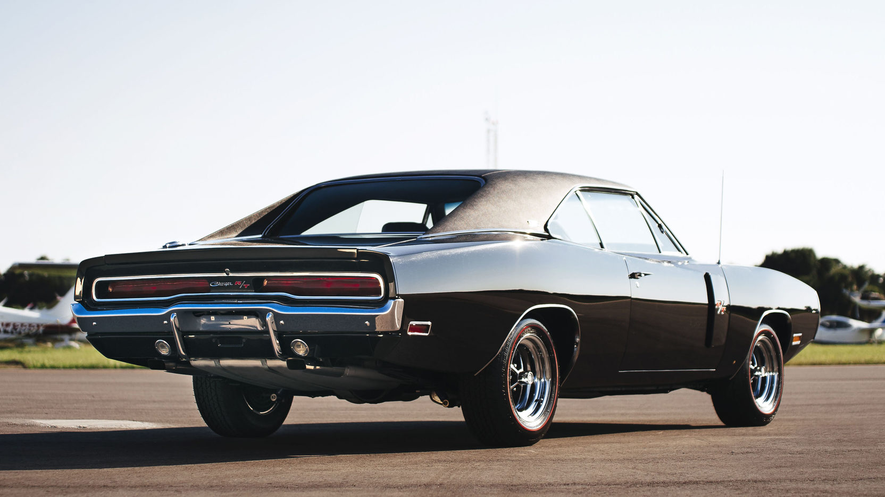

Dodge Charger 1970

1969 metais automobilis sulaukė vos kelių pakeitimų. Eksterjero pakeitimus sudarė atnaujintos priekinės grotelės, kurios buvo padalintos į dvi dalis, bei dar kartą atnaujinti galiniai žibintai, kurie tapo išilgais. Abu pakeitimus atliko Harvey J. Winn. Taip pat atsirado nauja Special Edition (SE) versija. Pirmą kartą atsirado galimybe už papildomą kainą užsisakyti automobilį su stoglangiu, tačiau tai nebuvo populeru, buvo nupirkta tik 260 tokių automobilių. 1969 metais buvo pagaminta apie 85 680 automobilių. Tais pačiais metais Dodge siekdama sėkmės NASCAR lenktynėse pristatė dvi rečiausias ir labiausiai pageidaujamas šio automobilio versijas: Charger 500 ir Charger Daytona.
>